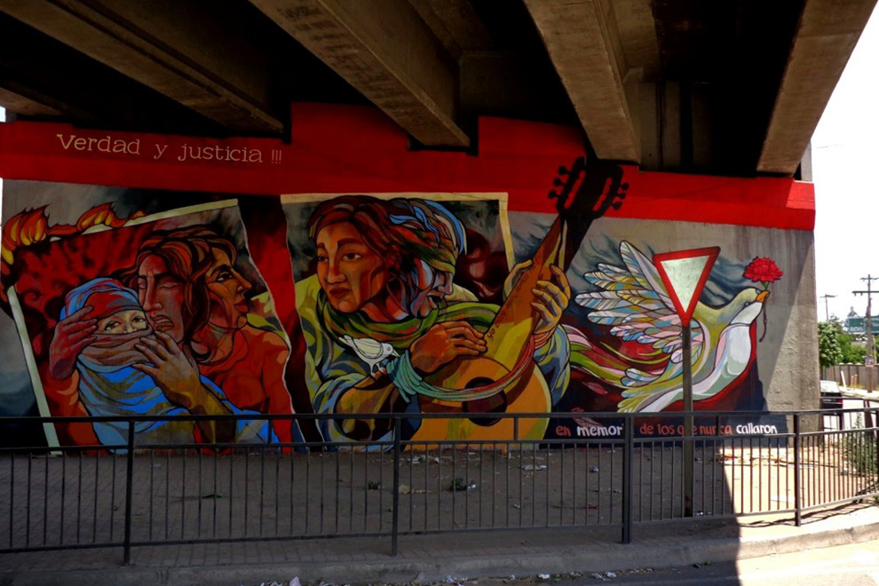

Del Liceo, los muralistas salieron a las calles de Santiago, Valparaíso, Temuco, Chillán, Valdivia y otras regiones, además de otros países de Latinoamérica, como Argentina, Bolivia y Paraguay. Pasaron a llamarse “Los Oberoles”, una referencia a los trajes que ocupan los pintores, y tenían una meta, que se mantiene hasta hoy: “hacer murales con un contenido que refleje alguna parte de la memoria colectiva, de un relato, de una historia, de un hecho oprimido por la violencia de las armas, de hacer visible lo que nos ocultan a través de la educación, medios y sociedad“. Actualmente, el colectivo ya ha pintado en locales emblemáticos de Santiago, como el bar El Pipeño, en Calle Biobio con Tocornal, y La Piojera, en la Calle Aillavillu, a pasos de la estación de metro Cal y Canto. Por lo general, tratan de incluir a la comunidad en sus trabajos, desde la idea del mural, hasta la pintura del mismo. Durante noviembre, en el sector de Franklin-Matadero-Biobio como parte del proyecto del Ministerio de Vivienda y Urbanismo “Quiero mi Barrio“. También ese mes, representaron a Chile en el Encuentro Internacional de Muralismo y Arte Público en el Puerto Tirol (Chaco, Argentina).
